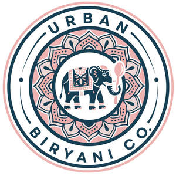

Trade Mark Journal No.2026/003 16 January 2026
UK00004316351 27 December 2025 (30,35,43)

- Class 30
- Snack food products consisting of cereal products; Starch products for food; Snack food products made from rice; Snack food products made from cereals; Snack food products made from cereal starch; Snack food products made from maize flour; Snack food products made from soya flour; Snack food products made from cereal flour; Snack food products made from rice flour; Snack food products made from potato flour; Maize based snack products; Snack food products made from rusk flour; Extruded food products made of rice; Extruded food products made of maize; Cereal-based snack food; Snack food (Cereal-based -); Extruded food products made of wheat; Flavourings of tea for food or beverages; Chocolate food beverages not being dairy-based or vegetable based; Snack food (Rice-based -); Rice-based snack food; Pasta products; Flavourings of almond for food or beverages; Vegetable pulps [sauces - food]; Cereals for food for consumption by humans; Processed cereals for food for human consumption; Starch for food; Edible gold for decorating food and beverages; Flavourings of lemons for food or beverages; Vanilla flavourings for food or beverages; Malt-based food preparations; Food flavourings; Syrup for food.
- Class 35
- Business marketing services; Business marketing consulting services; Business promotion services; Business consultancy services; Business marketing consultation services; Advertising and marketing services; Marketing services; Business networking services; Advertising services; Business invoicing services; Professional business consultancy services; Business consulting services; Business brokerage services; Business advertising services relating to franchising; Business strategy services; Online business networking services; Business secretarial services; Business management services; On-line advertising and marketing services; Digital advertising services; Advertising services for the promotion of e-commerce; Chartered accountancy business services; Online advertising services; Business examinations services; Business enquiry services; Business marketing consultancy; Business management consultancy services; Business management and consultancy services; Business administration services; Advertising, marketing and promotion services; Marketing, advertising and promotion services; Business expertise services; Business consultation services; Business consultancy services for digital transformation; Business intelligence services; Business research services; Promotion [advertising] of business; Acquisitions (Business -) consulting services; Advertising, marketing and promotional services; Advertising, promotional and marketing services; Marketing, advertising, and promotional services; Business management services for footballers; Business merchandising display services; Advertising services for the literary industry; Business introduction services; Business management for freelance service providers; Business management and consulting services; Business advisory services; Business management consulting services; Advertising services for architects; Business planning services; Business intermediary services; Advertising and promotion services; Business representative services; Business consulting services for digital transformation; Outsourcing services in the field of business analytics; Business merger services; Business analysis services; Business planning services for enterprises; Political advertising services; Advertising services for the promotion of beverages; Services of advertising agencies; Advertising services relating to the provision of business; Business consultancy services relating to manufacturing; Business and commercial information services; Marketing agency services; Business appraisal services; Consultancy relating to business advertising; Business information services; Marketing the goods and services of others; Business accounting advisory services; Advertising and promotional services; Promotional and advertising services; Promotional advertising services; Business consultancy and advisory services; Business advisory and consultancy services; Accountancy services; Outsourcing services [business assistance]; Consultancy services regarding business strategies; Modeling services for advertising or sales promotion; Business management and organization consultancy services; Business management and consultation services; Business project management services; Advertising particularly services for the promotion of goods; Planning services for advertising; Advertising agency services; Business management and organisation consultancy services; Business consultancy; Chamber of commerce services for the promotion of businesses; Business strategy development services; Consultancy services in the field of affiliate marketing; Advertising and publicity services; Graphic advertising services; Business consultancy to individuals; Advertising services relating to financial services; Business organisation and management consulting services; Corporate communications services; Consultancy services relating to advertising, publicity and marketing; Advertising, promotional and public relations services; Advertising, marketing and promotional consultancy, advisory and assistance services; Consultancy (Professional business -); Professional business consultancy; Business consultancy (Professional -); Relocation services for business; Business relocation services; Marketing consultation services; Business efficiency expert services; Efficiency (Business -) expert services; Marketing services in the field of restaurants; Business consulting services in the agriculture field; Business management services relating to the acquisition of businesses; Business administrative services for the relocation of businesses; Business consultancy services relating to the marketing of fund raising campaigns; Advisory services (Business -) relating to the management of businesses; Advertising research services; Business consultancy services relating to insolvency; Business advisory services relating to business liquidations; Business consultancy to firms; Business management services relating to the development of businesses; Consulting services in the field of Internet marketing; Outsourcing services in the field of business operations; Advisory services for business management; Business management advisory services; Management (Advisory services for business -); Business information agency services; Advisory services relating to business management and business operations; Consulting services in business organization and management; Advertising services relating to the travel industries; Procurement services for others [purchasing goods and services for other businesses]; Commercial consultancy services; Advertising and advertisement services; Retail services in relation to non-alcoholic beverages; Alcoholic beverage procurement services for others [purchasing goods for other businesses]; Retail services in relation to food cooking equipment; Wholesale services in relation to non-alcoholic beverages; Retail services in relation to alcoholic beverages (except beer); Wholesale services in relation to food cooking equipment; Retail services relating to food; Retail services via catalogues related to non-alcoholic drinks; Wholesale services in relation to alcoholic beverages (except beer); Retail services via catalogues related to alcoholic beverages (except beer); Retail services relating to alcoholic beverages; Mail order retail services related to alcoholic beverages (except beer); Mail order retail services related to non-alcoholic beverages; Providing consumer product information relating to food or drink products.
- Class 43
- Hospitality services [food and drink]; Take-away food and drink services; Takeaway food and drink services; Services for the preparation of food and drink; Food and drink preparation services; Services for the provision of food and drink; Catering services for the provision of food and drink; Club services for the provision of food and drink; Services for providing food and drink; Catering of food and drink; Catering (Food and drink -); Food and drink catering; Food and drink catering for institutions; Consultancy services in the field of food and drink catering; Catering for the provision of food and drink; Catering of food and drinks; Take-away food services; Takeaway food services; Provision of food and drink; Corporate hospitality (provision of food and drink); Provision of food and drink in restaurants; Food and drink catering for banquets; Take away food and drink services; Catering for the provision of food and beverages; Providing food and drink catering services for exhibition facilities; Provision of food and beverages; Food and drink catering for cocktail parties; Serving food and drink for guests; Preparation of food and drink; Charitable services, namely providing food and drink catering; Take-away fast food services; Wine tasting services (provision of beverages); Providing food and drink catering services for convention facilities; Providing food and drink; Providing of food and drink; Serving food and drink for guests in restaurants; Providing food and drink for guests; Food preparation services; Providing food and drink catering services for fair and exhibition facilities; Night club services [provision of food]; Providing food and drink for guests in restaurants; Food reviewing services [provision of information about food and drinks]; Providing food and drink in bistros; Serving food and drinks; Restaurant services for the provision of fast food; Catering services for the provision of food; Contract food services; Preparation of food and beverages; Providing food and beverages; Information, advice and reservation services for the provision of food and drink; Serving food and drink in Internet cafes; Serving food and drink in doughnut shops; Providing food and drink in doughnut shops; Services for providing drink; Providing drink services; Wine bar services; Arranging of wedding receptions [food and drink]; Providing food and drink in Internet cafes; Services for providing food; Providing food and drink in restaurants and bars; Serving food and drink in restaurants and bars; Providing of food and drink via a mobile truck; Snack bar services; Beer bar services; Rental of food service equipment; Take away food services; Beer garden services; Coffee bar services; Sushi restaurant services; Coffee supply services for offices [provision of beverages]; Preparation and provision of food and drink for immediate consumption; Consultancy services relating to food; Washoku restaurant services; Restaurant services; Take-out restaurant services; Rental of food service apparatus; Food service apparatus (Rental of -); Rental of furniture, linens, table settings, and equipment for the provision of food and drink; Cocktail lounge services; Lounge services (Cocktail -); Buildings [Rental of transportable -]; Consultancy services relating to food preparation; Provision of information relating to the preparation of food and drink; Juice bar services.
Mikhan Paul